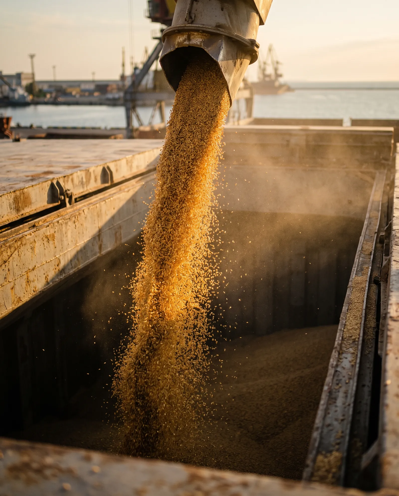

01
Море
Костери з Одеси та дунайських портів (Ізмаїл, Рені) до Туреччини, Греції та Середземномор'я.
AVENOR TRADE · ОДЕСА, УКРАЇНА
Шрот, олії, зерно і бобові — до Туреччини, MENA, ЄС та Азії.
Маршрути
Костери з Одеси та дунайських портів (Ізмаїл, Рені) до Туреччини, Греції та Середземномор'я.
Через Констанцю та порти Чорного моря до Китаю, Південно-Східної Азії, Індії, Пакистану та Затоки.
Через Мостиська до Гданська (Польща).
До Туреччини та ЄС, навалом і в біг-бегах.
Продукція

Шрот: соняшниковий, соєвий, ріпаковий · DDGS · Глютен · Жом · Меляса
Соняшникова · Соєва · Ріпакова · Лецитин

Пшениця · Кукурудза · Ячмінь · Овес · Просо · Сорго · Солод · Борошно
Горох жовтий і зелений · Нут · Сочевиця · Квасоля · Боби
Соняшник · Соя · Ріпак · Льон · Гірчиця · Кунжут
Цукор білий буряковий
Покупцю
Купуємо напряму в українських господарствах і на олійноекстракційних заводах.
Перевіряємо вагу, пломби й документи. Сюрвеєри, схвалені GAFTA і FOSFA, перевіряють якість і вагу на навантаженні.
Ми — ваш єдиний контакт до доставки.
Умови: FCA, FOB, CFR, CIF, DAP — за кожним договором
Оплата: акредитив, CAD або TT — за домовленістю. Повний пакет документів: сертифікати якості, ваги та походження.